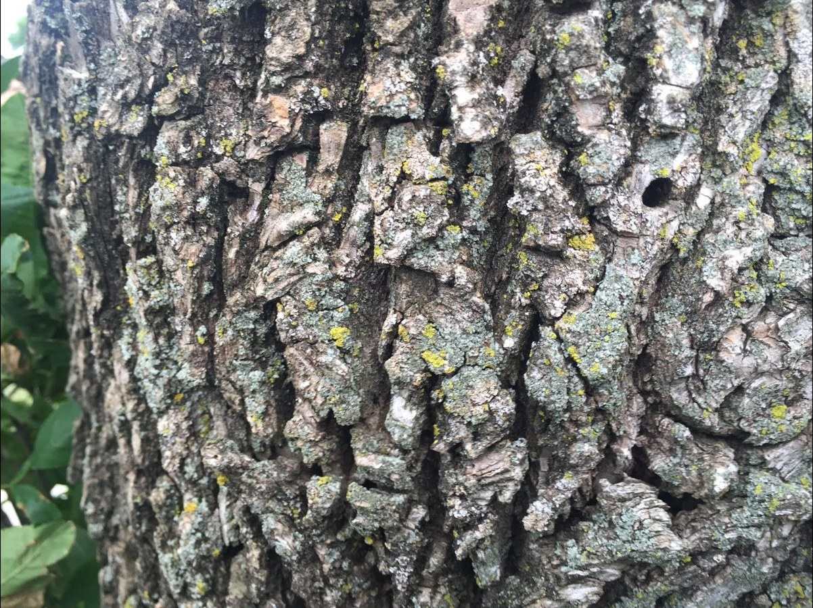
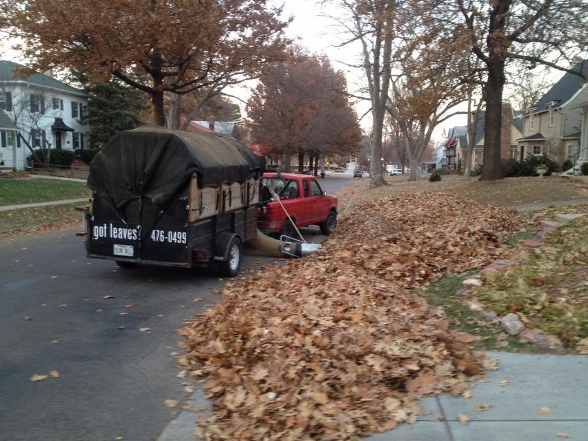
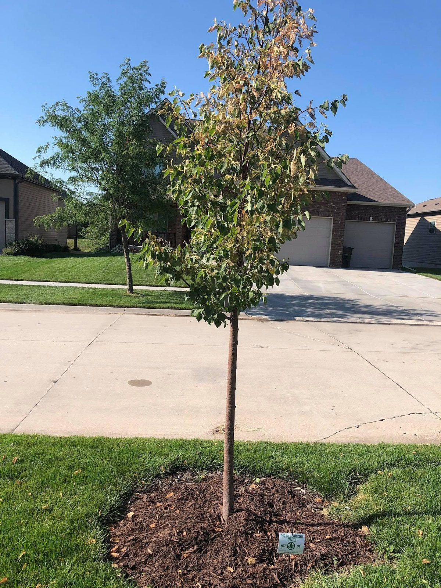

Services
What Frerichs does
One crew handles the ten jobs below, and the phone number reaches the owner directly. Will Frerichs is a city licensed arborist and a state licensed pesticide applicator, and the business is insured. Estimates are free.
Tree trimming and removal
Trimming and removal all year, in every season, with free estimates. Stump grinding takes care of the stump after a removal.
Emerald ash borer treatment
Insecticide injection in spring. The bark tells the story early: small exit holes in the bark and thinning at the top of the tree.

Iron injections for oaks and birches
Iron injections for pin oaks and river birches in late fall, using Cambistat.
Lawn applications
Customized lawn applications through the growing season: power raking, aerating, and overseeding in April, May, September, and October. Lawn fertilizer is available too, including organic products.
Leaf cleanup
Leaf cleanup with the Giant Vac. The truck and trailer vacuum up curbside piles, and the crew finishes the yard with blowers. Fall leaf cleaning and removal is the same visit, leaves picked up and hauled away.

Snow removal
Residential snow removal at $10 to $15 per inch. The same crew that clears your leaves in fall clears your driveway in winter.
Gutter cleaning
Gutter cleaning, clearing the leaves and debris out of the gutters so water runs where it should.
Hedge trimming
Hedge trimming through the year, with the tree work.
Lawn and tree consulting
A whole-property analysis for lawns and trees that are not doing well. $100 for a typical property, and $200 to $300 for large properties. Text Will a photo of the problem for a quick assessment.

Lawn seeding and overseeding
Lawn seeding and overseeding for thin and bare spots, done with the lawn applications in spring and fall.
What it costs to ask
Estimates are free. Consulting is $100 for a typical property and $200 to $300 for large properties. Snow removal runs $10 to $15 per inch. For anything else, call or text Will and he will price the job from a look at the property, or from a photo you text him.